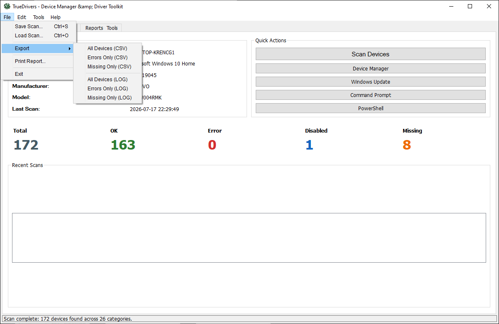
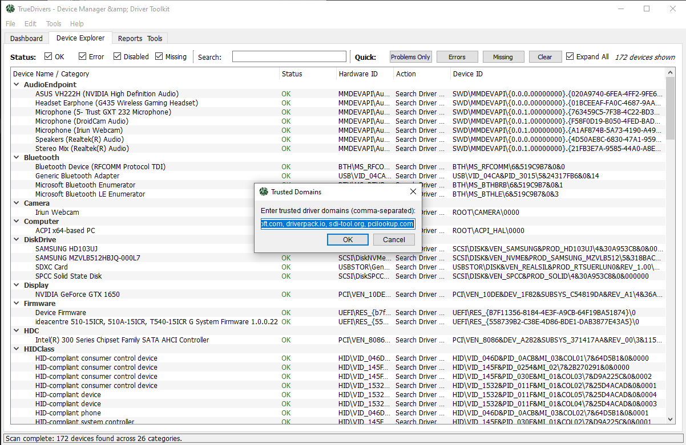
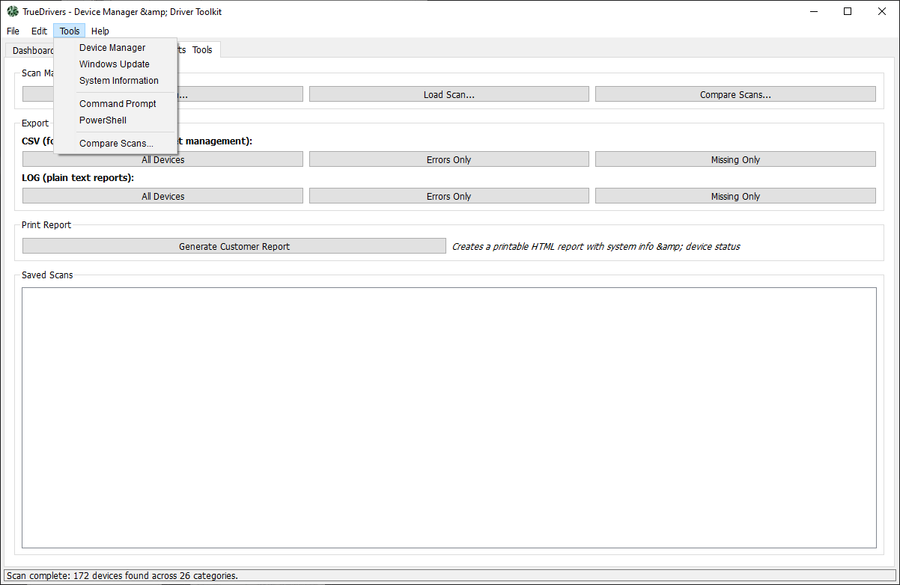
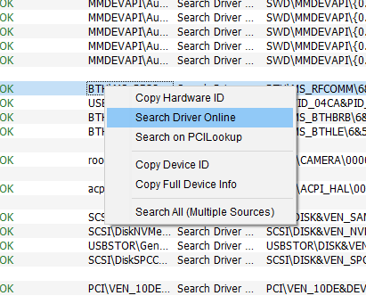
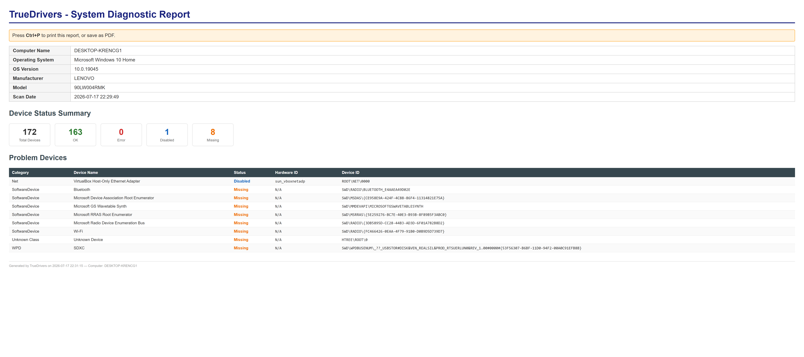

TrueDrivers helps technicians and IT teams identify driver problems, analyze hardware configurations, track system changes, and create professional service reports in seconds. Designed for repair shops, refurbishers, and enterprise environments where speed, accuracy, and reliability matter.





Designed for technicians who need fast access to hardware status, clean reporting tools, and reliable diagnostic workflows.
Collect detailed hardware and driver information directly from Windows systems.
Instant overview of driver health, missing devices, and system status.
Store diagnostic scans and reopen them later for comparison and auditing.
Create portable reports for customers, records, and internal workflows.
Generate professional print-ready reports with a single click.
Quick access to verified driver sources and update recommendations.